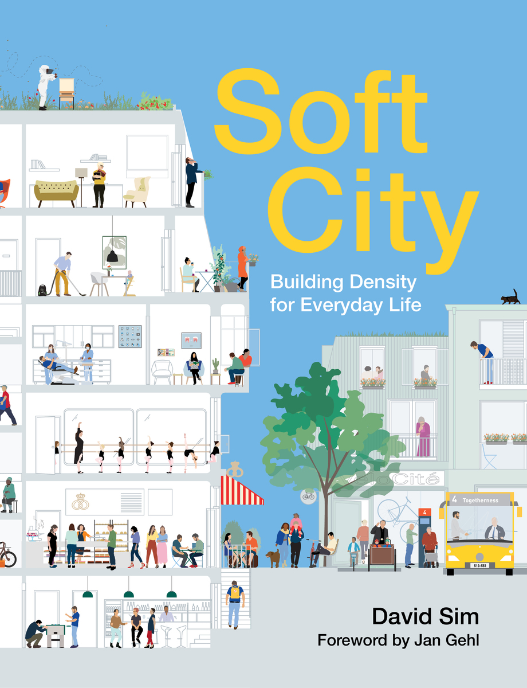
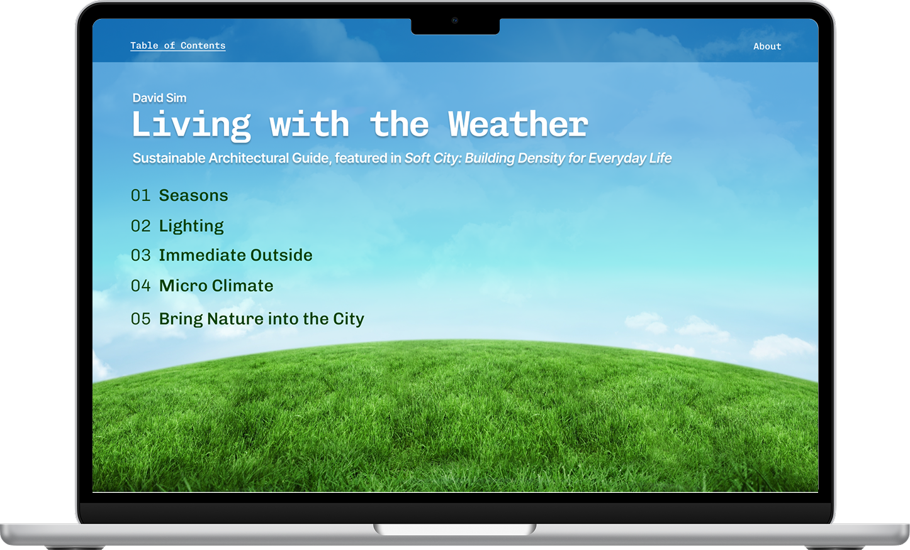
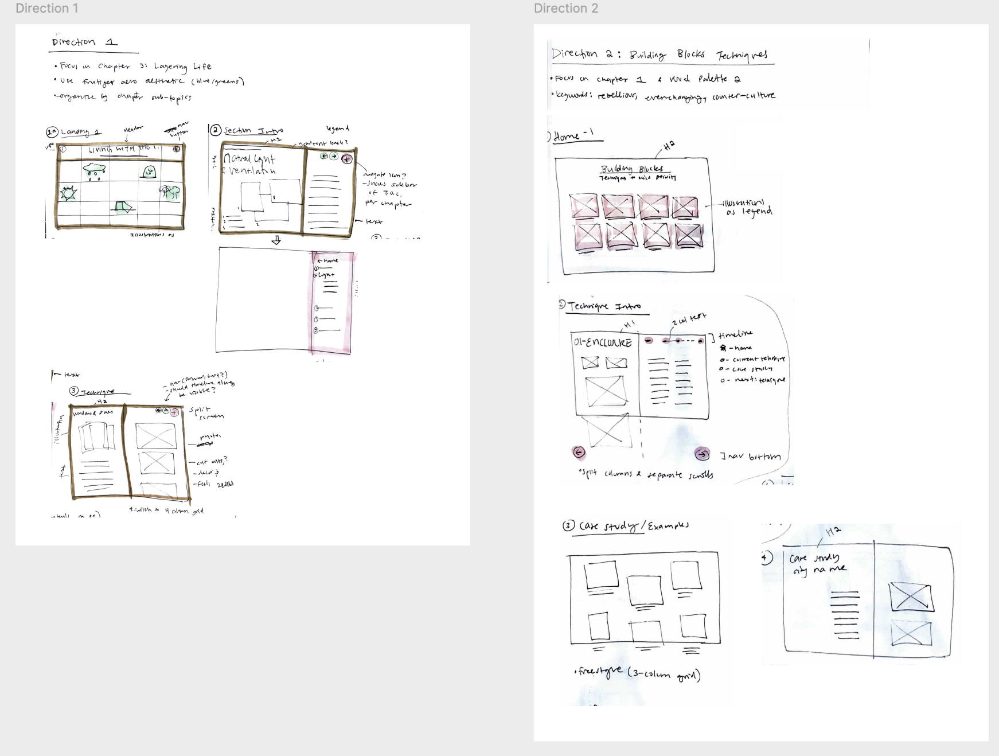
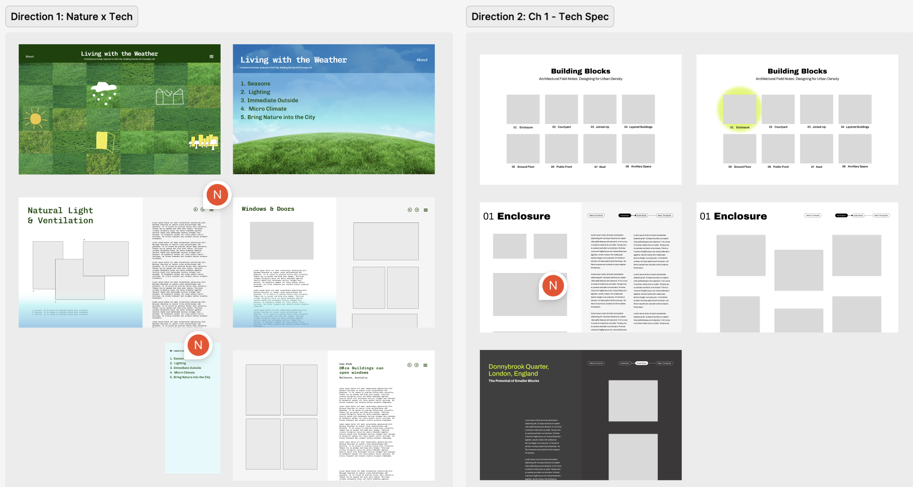
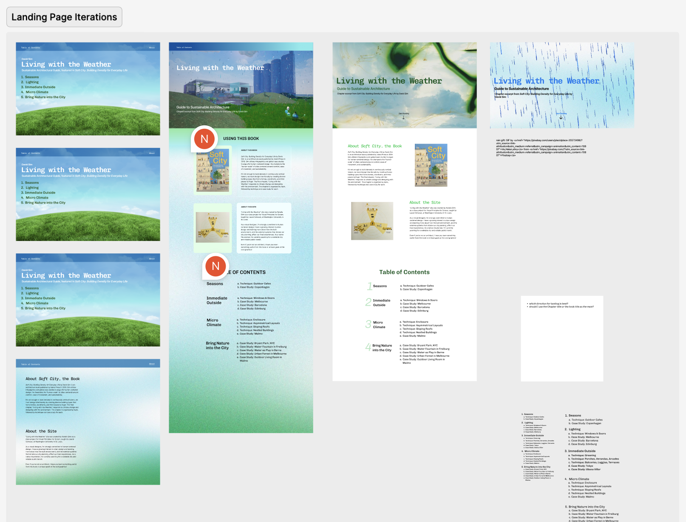
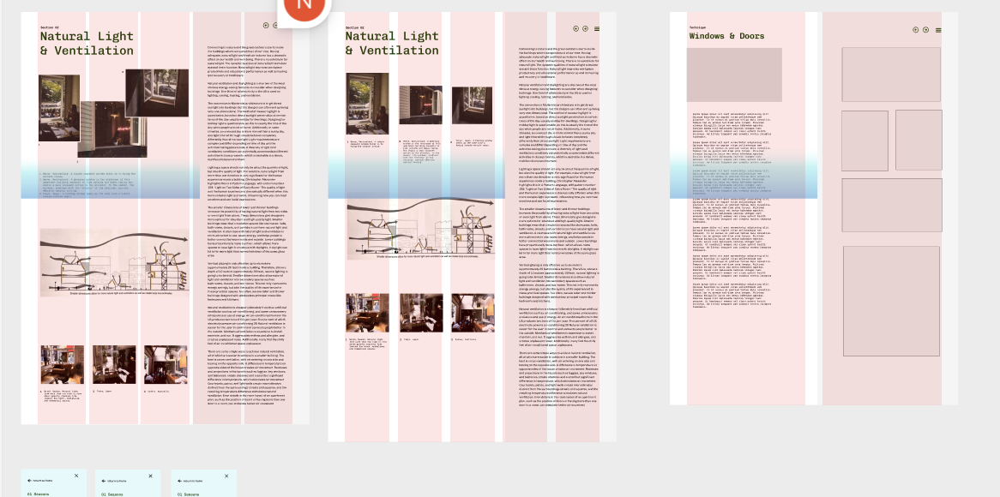
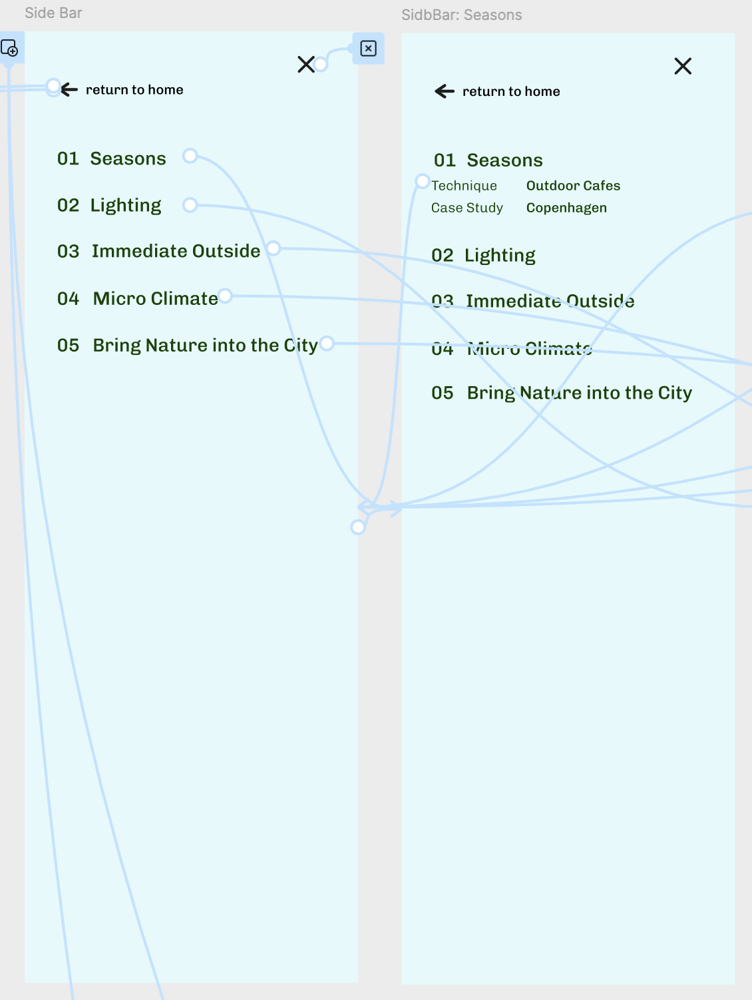

Translating Soft City

In-depth Figma Prototype


Soft City: Building Density for Everyday Life by David Sim is an urban design & architecture book focused on human-centered design. Through case studies of successful cities and architectural diagrams, it offers guidance to designing walkable, human-centric cities. Prioritizing community, ease of movement, and comfort it champions the “human scale.”
The book has three chapters, but this site will only focus on the final chapter, Layering Life, which highlights the environmental aspects of urban design.
View the complete Figma project: Soft City Prototype
Process Snapshots
Milestone 1.1 — Share 2-3 Possible Books 📚
- A *Co-* Program for Graphic Design by David Reinfur
- Soft City by David Sim
See Book Options presentation on Figma
Milestone 1.2 — Choose 1 Book 📗, Share Palettes 🎨
Palette 1 explores how technology & nature intersect, inspired by hopeful frutiger aero aesthetics of the 2000s, using glossy textures and nature iconography. Palette 2 empahsizes clean architectural lines, inspired by brutalism and minimalism.


Milestone 2.2 — Choose 1 Direction, Create Wireframes & Cohesive Design
Sketches

Two Proposed Directions; different content. Left focuses on Chapter 4 and uses nature imagery, inspired by frutiger aero aesthetics. Right focuses on Chapter 1, leaning into more technical architectural diagrams.

Milestone 2.5 — Rapid Iteration of Landing Page
Explore different images, grids, and order of information for best user flow.

Milestone 3.0 — Refine Interior Page Grids
Populate pages with content & refine layout. Focus on navigation, micro-interaction, and typography details.


Takeaways
This is one of the more extensive Figma interactive projects I've done, so I've gotten to learn more Figma skills. I was challenged to think systematically in order to create a structure to organize the content of the book, and to also translate that into a visual system. I feel more confident in my prototyping skills after this project. I learned of the importance to pace myself when working on a much longer or elborate project with many pages.